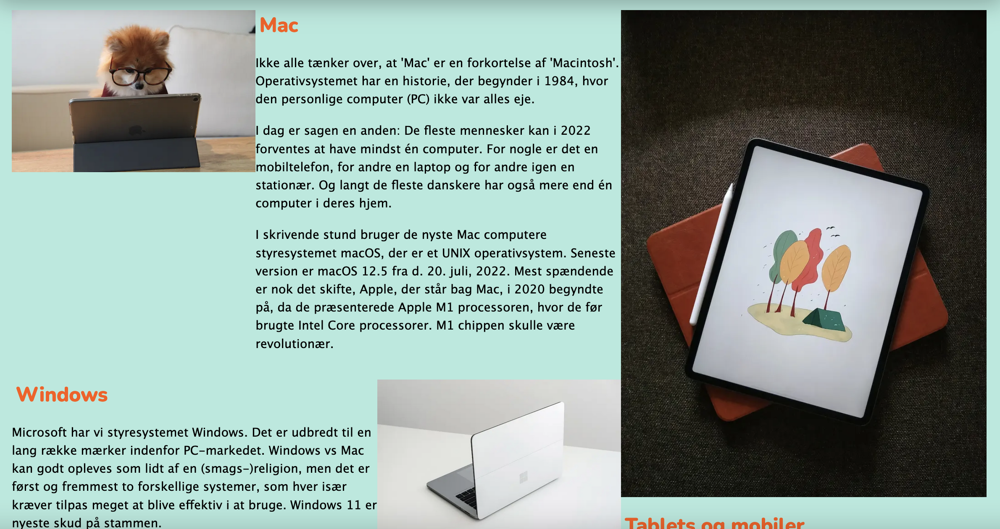

Første projekt inden for grundlæggende web var studiestartsprøven. Her fik vi til opgave at bygge et
website op med HTML
og CSS. Vi lærte HTML og CSS sproget fra bunden og brugte Visual Studio Code. Vi fik
oprettet vores eget
domæne, lærte
om filformater og mappestruktur. Vi brugte redskabet FreeCodeCamp til at øve os. De tilbyder mange
koder, som jeg har
brugt til inspiration til projekter. Opgaven var primært at følge et allerede eksisterende site og
kopiere det til punkt
og prikke. Vi blev da introduceret til wireframes og layoutdiagrammer. Her lærte vi at for
at kunne
opbygge et
systematisk site, og gøre det lettere for sig selv, er det godt at følge et diagram, man har lavet på
forhånd. Vi fik
alt materiale udleveret af undervisere i første forløb, og det har jeg brugt som skabelon til senere
projekter. Altså da
vi havde det basale på plads, byggede vi sitet op i grids og flexboxe ud fra wireframes og
layoutdiagrammer.
Vi kunne
selv vælge vores farver og fonte til sitet. Her brugte vi redskaber som kunne genere font og
farvesammensætninger såsom
Adobe Color, Coolors og Fontjoy. Jeg har brugt Adobe Color til alle mine senere projekter som et
fundament for
farvesammensætninger.

Emnesite
Andet projekt inden for grundlæggende web var vores emnesite. Her var målet at benytte, hvad vi
havde
lært fra
studiestartsprøven til et website om et valgfrit emne. Vi havde især fokus på
designprincipper. Vi
lærte
om farvevalg,
kontraster, gentagelser, white space og gestaltlovene. Til mit projekt om den spanske kyst valgte
jeg
farverne blå og
orange. Det et to kontrastfyldte farver. Jeg valgte lyse farver frem for mørke farver for at få et
let
og sommerligt
udtryk. Til mit projekt valgte jeg at bruge loven om nærhed og placerede mine elementer nær hinanden
for
at vise, hvad
hang sammen. Jeg valgte tilmed dette, da jeg ville have whitespace omkring mine elementer, så ved at
placere dem tæt,
ville jeg få meget luft omkring, hvilket bidrog til mit stilvalg om lethed.
Til vores site skulle vi designe vores eget logo lavet i Adobe Illustrator. Vi lærte programmet godt
at
kende. Vi fik
redskaber til hvordan man går i gang med design af logo ved hjælp af skitsering.
For at få et overblik over den samlede stil, vi valgte til vores projekt, brugte vi redskaber som
moodboards, et
styletile og et mockup. Dette brugte vi Adobe XD til at udføre.
Til at kode sitet lavede vi et wireframe og layoutdiagram, som vi lærte i projektet før. Dette
gjorde
det en del nemmere
at håndtere og gå til.